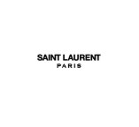
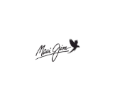
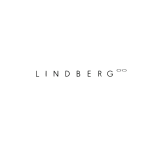
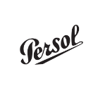
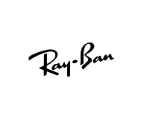
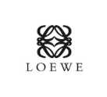
Nos marques phares
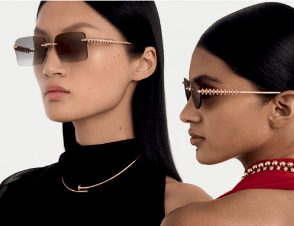
CARTIER
Symbole de raffinement et d’élégance intemporelle, les lunettes Cartier allient le prestige d’une maison de haute joaillerie à une exigence de qualité irréprochable.
Chaque monture est conçue avec une précision artisanale dans des matériaux nobles comme le titane ou l’acétate.
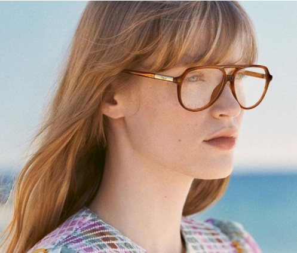
CHLOÉ
Les lunettes Chloé se distinguent par leur style féminin, moderne et délicat.
Inspirées de la mode parisienne, elles proposent des formes douces, des couleurs légères et un esprit bohème chic.
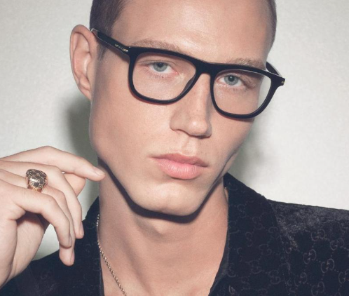
GUCCI
Les lunettes Gucci incarnent l'alliance entre tradition italienne et design audacieux.
Formes originales, détails dorés et logo GG font de chaque monture un véritable accessoire de mode.
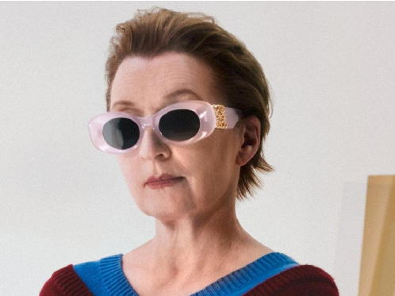
LOEWE
Les lunettes Chloé se distinguent par leur style féminin, moderne et délicat.
Inspirées de la mode parisienne, elles proposent des formes douces, des couleurs légères et un esprit bohème chic.
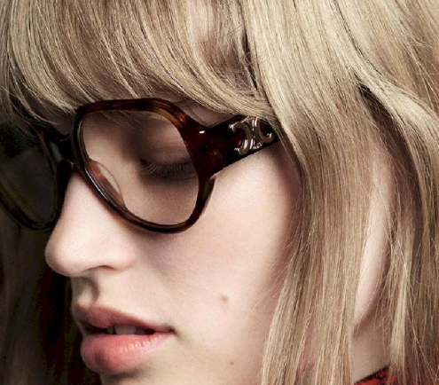
CÉLINE
Les lunettes Gucci incarnent l'alliance entre tradition italienne et design audacieux.
Formes originales, détails dorés et logo GG font de chaque monture un véritable accessoire de mode.
SAINT LAURENT
Les lunettes Chloé se distinguent par leur style féminin, moderne et délicat.
Inspirées de la mode parisienne, elles proposent des formes douces, des couleurs légères et un esprit bohème chic.
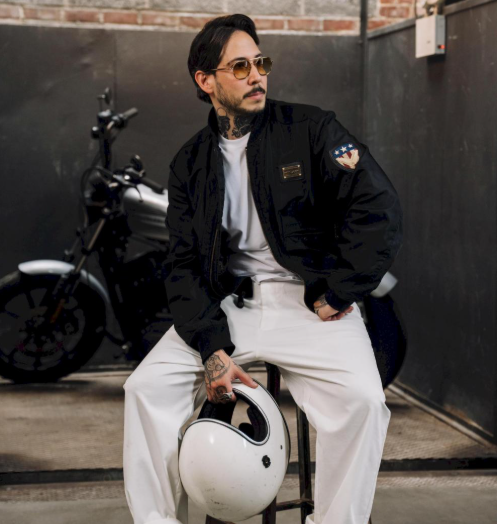
MOSCOT
Les lunettes Gucci incarnent l'alliance entre tradition italienne et design audacieux.
Formes originales, détails dorés et logo GG font de chaque monture un véritable accessoire de mode.
LINDBERG
Les lunettes Chloé se distinguent par leur style féminin, moderne et délicat.
Inspirées de la mode parisienne, elles proposent des formes douces, des couleurs légères et un esprit bohème chic.